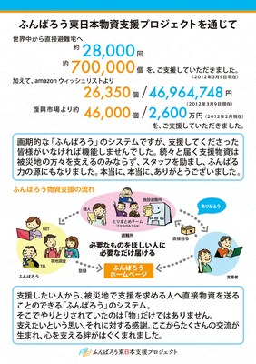

ふんばろう東日本物資支援プロジェクト
2011.4〜2012.3の活動をふりかえって
2011年4月から2012年3月まで、ふんばろう東日本支援プロジェクトでは「物資支援プロジェクト」として、被災された東日本のみなさまへ支援物資を届ける活動を行いました。
プロジェクトの概要
ふんばろう東日本「物資支援プロジェクト」（以下 物資PJ）は、早稲田大学 西條剛央研究室を事務局とし、日本全国、海外のボランティアがインターネットを利用して自宅で活動できるプロジェクトでした。
そのため、東北まで行けない方にも参加しやすい形態でした。
支援者の方も、日本全国、海外など広い地域から「心を込めた支援物資」をプレゼントのように送ってくださいました。

ご支援・ご協力ありがとうございました
2012年3月31日をもって、このプロジェクトは終了しました。
直接お会いして、または電話やメールで必要なものをお聞きして、被災地のみなさまからの要望を確認し、ボランティアスタッフがその内容をホームページに掲載することで、全国のみなさまに、被災者が必要としているものの情報を公開しました。
ホームページをご覧になった全国のみなさまは、それぞれが応援したいところへ、ご自分の持っているものや集めたものなどを直接送付してくださいました。
全国のみなさまからのあたたかいご支援によって、避難所・仮設住宅・個人避難宅・団体に多くの物資を届けることができました。
画期的な物資支援システムも支援してくださったみなさまがいなければ成り立ちませんでした。
続々と届く支援物資は、被災地の方たちだけでなく、私たちスタッフを励まし、ふんばる力の源にもなりました。
本当に、本当に、ありがとうございました。
ふんばろう物資支援プロジェクトは終了しましたが、まだ被災地では多くの方がご苦労されている状態です。
被災されたみなさまの復興への歩みが一日も早く進みますことを心からお祈りしております。
ネットを利用した物資支援をお考えの方へ
東日本大震災の復旧がままならないうちに、各地で地震・豪雨・豪雪などによる災害が続いています。わたしたちの活動が今後に少しでも役に立てばと考え、ふんばろう東日本物資支援プロジェクトの活動内容についてまとめました。
「ネットを利用した物資支援をお考えの方へ」をご覧いただければ幸いです。
（2014年10月11日）
| 目 次 | |
|---|---|
| ふんばろう物資支援プロジェクトの特長 | なぜ過去の実績がないふんばろうに多くの方が協力してくださったのでしょうか |
| システム ー ふんばろうの物資支援のしくみ | 「必要なものを」「必要な分だけ」「必要なところへ」 支援のしくみについて |
| 課題と提言ー次の災害に備えるために | 日々押し寄せる大量の情報整理と膨大な作業。その状況と課題を今後の参考にしていただければ |
| Amazonほしい物リスト／復興市場 | 「Amazonほしい物リスト」を利用した支援や、外部団体である「復興市場」さんと連携について |
| 資料ーアーカイブス | 実際に配布されたチラシやホームページなどの資料 |
| 東北とみんなのお話し |
[関連サイト] |